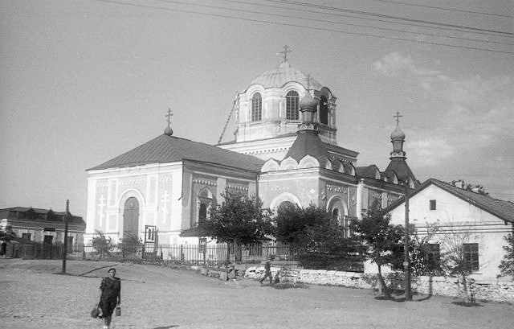

История Белой Калитвы
Земли вокруг Белой Калитвы дышат историей. По мнению ряда исследователей, именно в этих местах, на берегах реки Калитвы (быстрой Каялы), в 1185 году произошла знаменитая битва князя Игоря с половцами, описанная в велижайшем памятнике древнерусской литературы «Слово о полку Игореве».
«Что шумит, что звенит вовек рано перед зарями? Игорь полки заворачивает: жаль ему милого брата Всеволода...»

Официальная же история города начинается в 1703 году, когда по указу Петра I была основана казачья станица Усть-Белокалитвинская. Казаки обороняли южные рубежи Российской империи и активно участвовали во всех знаковых войнах.
Новая веха развития началась в XX веке с открытием крупных месторождений угля и строительством Белокалитвинского металлургического завода (БКМЗ). В 1958 году станица официально получила статус города и имя Белая Калитва.